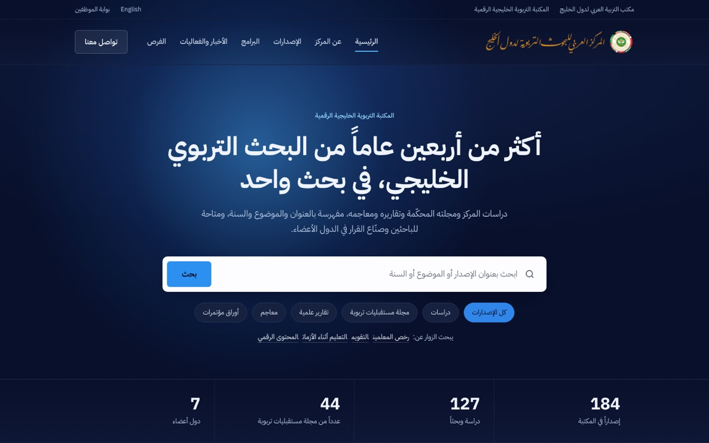
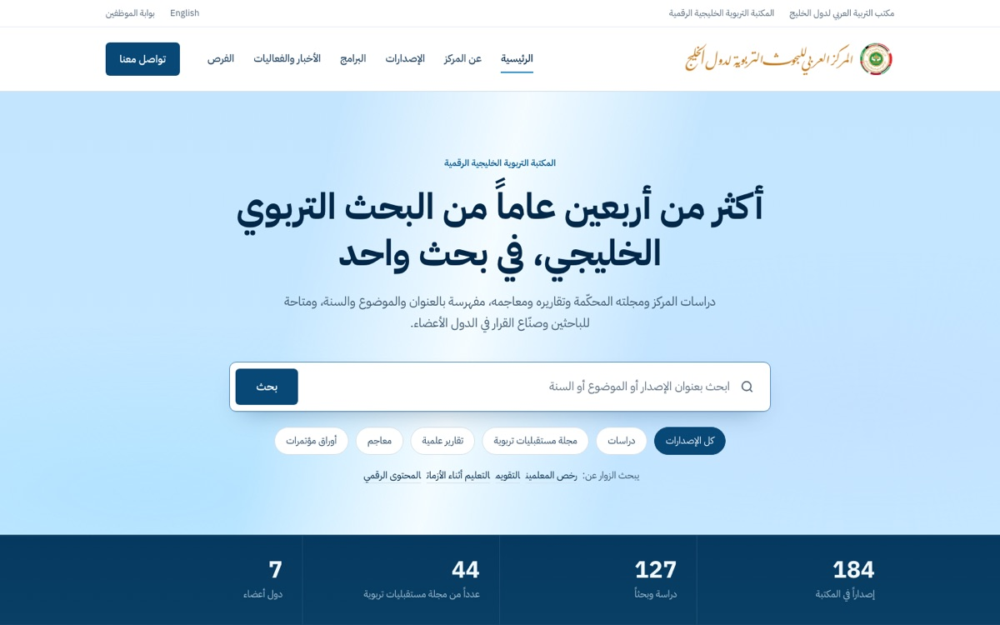
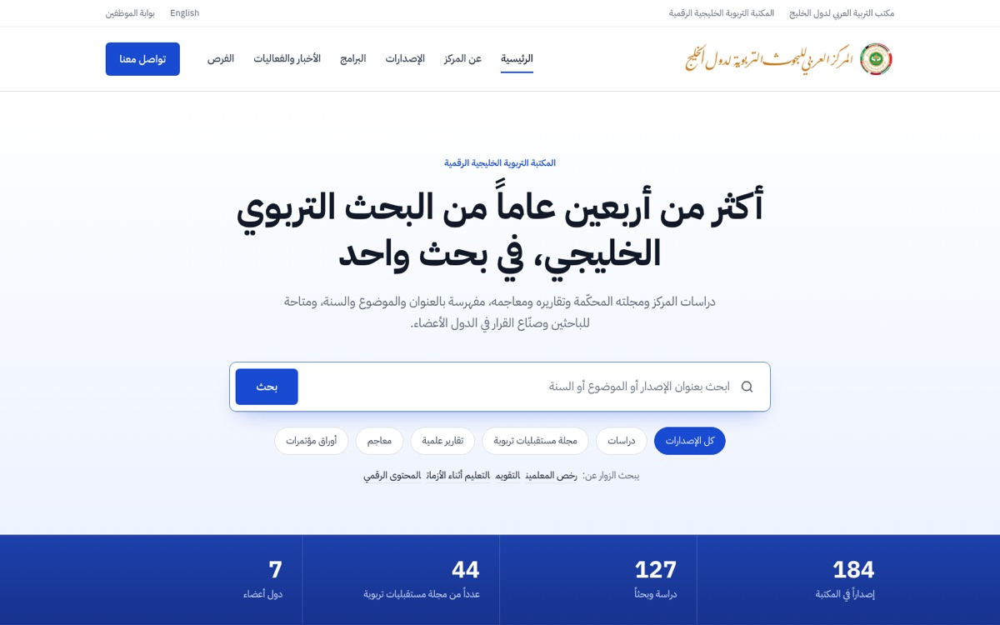
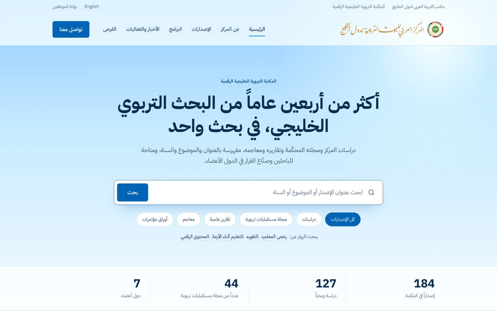

أمصباح القارئ
ليل كحليأعلى الصفحة بلون الليل، ومصباح يتبع المؤشر فوق البحث وتلتقط الأغلفة ضوءه، والليل يعود في شريط الأخبار.
نفس تصميم المكتبة الرسمية الذي اختاره المركز، بأربعة ألوان زرقاء، ولكل لون حركته. حرّكوا المؤشر فوق الصفحة الرئيسية وعلى الأغلفة.

أأعلى الصفحة بلون الليل، ومصباح يتبع المؤشر فوق البحث وتلتقط الأغلفة ضوءه، والليل يعود في شريط الأخبار.

بصفحة بلون الصدف وشريط أرقام بلون البحر، ولمعة لؤلؤ تتحرك بعمق مع المؤشر والتمرير، وشريط صدف في وسط الصفحة.

جأبيض صافٍ وحقول كوبالت. العنوان يُكتب بمسحة حبر، والأرقام تدور كالعدّاد، والحبر يفيض في خانات «تصفّح حسب النوع».

دفاتح بالكامل: شروق عند الوصول، وسماء تصفو مع التمرير، وسماء ثانية في وسط الصفحة، وأغلفة تميل بنابض خفيف.
التخطيط والخطوط والنصوص في الاقتراحات الأربعة مطابقة للمكتبة الرسمية، والمتغيّر هو الألوان والحركة فقط. في كل صفحة زرّ «إيقاف الحركة» أسفلها.